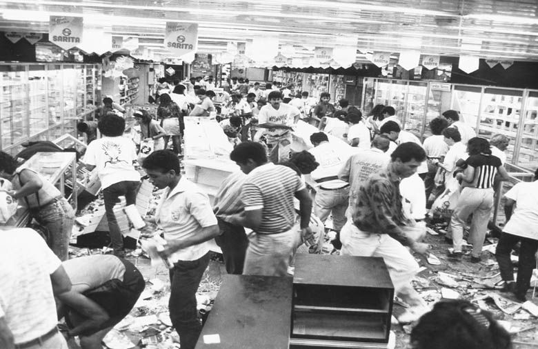
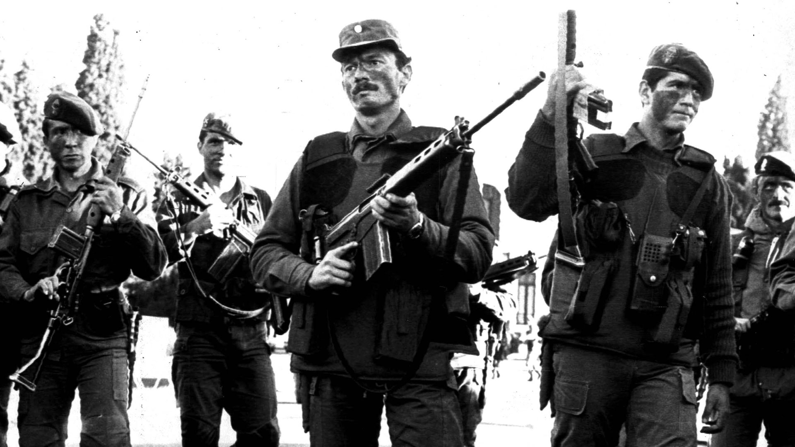
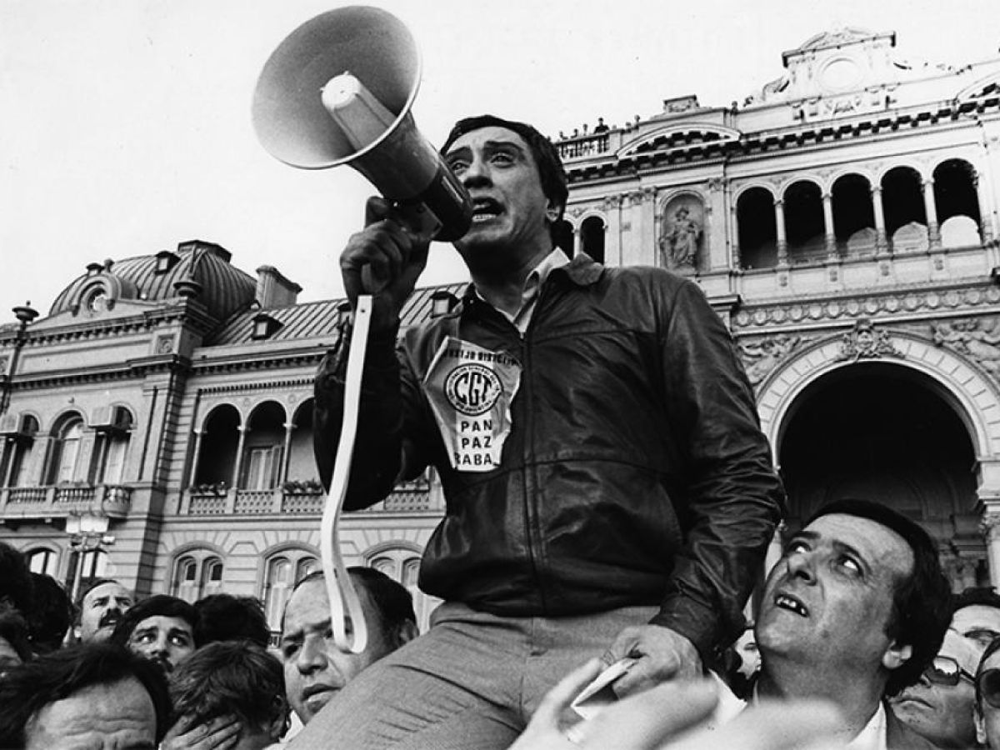

Problemas durante su presidencia
El gobierno de Raúl Alfonsín tuvo que enfrentar una etapa difícil, marcada por crisis económica, conflictos sociales y presiones militares.
Crisis económica e inflación
Deuda externa, aumento de precios e hiperinflación de 1989.
Crisis económica e inflación
Deuda externa, aumento de precios e hiperinflación de 1989.
Durante la presidencia de Raúl Alfonsín, Argentina atravesó una profunda crisis económica. Al asumir en 1983, el país heredó una gran deuda externa y una economía debilitada tras años de dictadura militar. Aunque el gobierno intentó estabilizar la situación mediante distintos planes económicos, los problemas continuaron agravándose.
La inflación aumentó de manera constante, provocando que los precios de los productos subieran rápidamente y que los salarios perdieran valor. Esto generó numerosas protestas y reclamos sociales. En 1989 la situación llegó a su punto más crítico con una hiperinflación que afectó gravemente a la población, provocó saqueos a supermercados y un clima de gran incertidumbre.

Levantamientos militares
Presiones de sectores militares y rebeliones carapintadas.
Levantamientos militares
Presiones de sectores militares y rebeliones carapintadas.
Uno de los mayores desafíos que enfrentó Raúl Alfonsín fue la presión de sectores de las Fuerzas Armadas. Tras el regreso de la democracia en 1983, su gobierno impulsó el juicio a los responsables de los crímenes cometidos durante la última dictadura militar.
Los levantamientos más importantes ocurrieron entre 1987 y 1988 y pusieron en riesgo la estabilidad de la joven democracia argentina. Aunque estas rebeliones fueron controladas sin romper el orden constitucional, obligaron al gobierno a enfrentar una fuerte presión militar durante gran parte de su mandato.

Conflictos sociales y huelgas
Protestas, reclamos sindicales y malestar por la crisis económica.
Conflictos sociales y huelgas
Protestas, reclamos sindicales y malestar por la crisis económica.
La difícil situación económica que atravesó Argentina durante el gobierno de Raúl Alfonsín provocó numerosos conflictos sociales y laborales. El constante aumento de los precios redujo el poder adquisitivo de los trabajadores, quienes reclamaban mejoras salariales para hacer frente a la inflación.
Como consecuencia, se realizaron múltiples huelgas y protestas organizadas por sindicatos y distintos sectores de la sociedad. Estas manifestaciones reflejaban el descontento de gran parte de la población ante las dificultades económicas y la pérdida de calidad de vida.

Momentos importantes
Retorno de la democracia
Raúl Alfonsín asumió la presidencia el 10 de diciembre de 1983, marcando el regreso de la democracia tras la última dictadura militar.
Plan Austral
Se implementó el Plan Austral para intentar frenar la inflación y estabilizar la economía.
Levantamiento carapintada
Se produjo el levantamiento de Semana Santa, uno de los principales desafíos militares para el gobierno.
Crisis económica
La hiperinflación y los conflictos sociales llevaron a la entrega anticipada del mando presidencial.